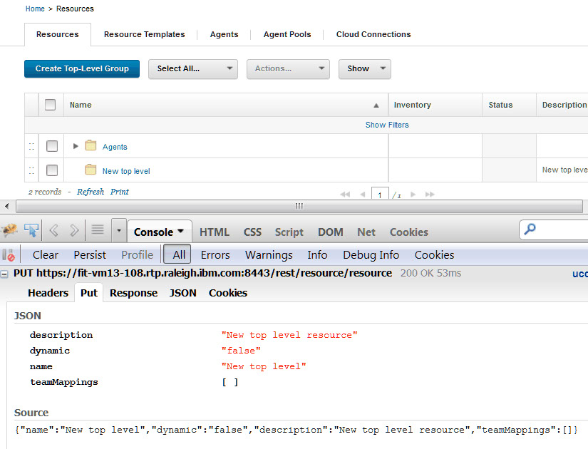

Running REST commands
Many different programs can run REST commands. To run the command, you call a method on a REST resource and pass parameters or a request in JSON format.
Example: Running simple REST commands with curl
The Linux™ program curl is a simple way to run REST commands. To run a REST command, put together the URL of one of the REST resources, specify the method to use, and add any parameters. For example, the following curl command retrieves a list of all active components. The command calls the GET method of thecomponent resource and passes the
value true for the parameter
active:curl -k -u jsmith:passw0rd
https://hostname:port/cli/component?active=true
-X GETcurl command calls a
POST method of a process request if you specify the
-d argument. However, you can also manually specify the HTTP method
type using the -X argument. As an
example:curl -k -u jsmith:passw0rd
https://hostname:port/cli/processRequest
-d @processRequest.json
-X POST-k
switch to connect to the server without checking SSL certificate validity. To set up
authentication, see Authenticating for REST commands.This example uses the user name jsmith and the password
passw0rd. In most cases, create a dedicated user account for the REST
commands to use and give that account the appropriate permissions.
hostname and
port. For example, if the host name is
deploy.example.com and the port is the default value of 8443, the
curl command might look like the following
example:curl -k -u jsmith:passw0rd
https://deploy.example.com:8443/cli/component?active=true
-X GETPassing parameters to REST commands
Many REST commands have one or more parameters. To pass these parameters, add them to the URL. For example, the GET method of theversion/getLink command takes three
parameters: the name or ID of the application, the name or ID of the version, and the name of
the link. To get a link on the JPetStore-APP component, the command might
look like the following example:curl -k -u jsmith:passw0rd
"https://deploy.example.com:8443/cli/
version/getLink?component=JPetStore-APP
&version=1.0
&linkName=IBM%20web%20site"?). An ampersand
(&) separates each pair. Because curl is a Linux command and the ampersand has a special meaning on
the Linux command line, the URL, including the
parameters, is enclosed in quotes.IBM web site as the value for the
linkName parameter. To include this parameter as part of the URL, the
spaces must be changed to the URL encoded value %20.Passing JSON strings to commands
For more complex commands, you must send a JSON string or file instead of or in addition to the parameters.application/create resource creates an application.
To use this command, you must pass a JSON string that specifies the
name, description, and some properties of the new application. The
JSON string for this command must follow this template:{
"description": "Description",
"enforceCompleteSnapshots": "Specify true to require
an explicit version for each component",
"name": "Application name or ID",
"notificationScheme": "Notification scheme"
}My
Application:{
"description": "My new application",
"enforceCompleteSnapshots": "false",
"name": "My Application",
"notificationScheme": "Default Notification Scheme"
}application/create resource,
you can either save the string to a file or include it in the command. For example, if you
save the string to a file that is named newApplication.json, the
command looks like the following example:curl -k -u jsmith:passw0rd
https://deploy.example.com:8443/cli/application/create
-X PUT -d @newApplication.jsoncurl -k -u jsmith:passw0rd
https://deploy.example.com:8443/cli/application/create
-X PUT
-d {"description":"My new application",
"enforceCompleteSnapshots":"false",
"name":"My Application 67",
"notificationScheme":"Default Notification Scheme"}Composing JSON strings
There are two main
ways to get the template of the JSON string for a command. The templates
are listed in the reference information for each command. You can
also run the equivalent command-line client command with the -t option.
Running the CLI command with this option prints the JSON template.
Because the server interface uses the REST API, you can also log in to the server as usual and
monitor the requests that the web application generates. You can monitor these requests with
web browser extensions or external programs. For example, to see the JSON string for the
PUT method of the resource/create resource, create a
resource on the web server as usual and then look at the JSON string in the browser request,
as shown in the following figure. The JSON string for the REST commands is the same or
similar to this string.

Accessing blueprints in REST commands
Most blueprint commands accept both a URL parameter and a Location header. For example, the command Get the contents of a blueprint has two parameters that refer to the target blueprint: the {blueprintId} parameter in the URL and the Location header.
When commands have both of these parameters, the Location header takes
precedence. Therefore, if you specify the complete location of the blueprint in the
Location header, such as
/landscaper/orion/file/jsmith_8a6bfff7_2c77_45db_a235_adda61ad6653-OrionContent/myTeam/myBlueprint/myBlueprint.yml,
the command uses that blueprint regardless of the value of the {blueprintId}
parameter.
You can get the location of a blueprint with the List blueprints command.
If the Location header is not specified, the command uses the value of the
{blueprintId} parameter. In this case, the command assumes that the blueprint
is in the default repository. It also assumes that the blueprint file name is the value of the
{blueprintId} parameter plus the extension .yml.
Responses
After a successful command, most commands return either a simple string value or a JSON string.- 200
- The command was successful.
- 400®
- You do not have permission to run the command.
- You did not specify a required parameter.
- The resource path in the URL is incorrect.
- 404
- The object that you are trying to retrieve does not exist.
- 405
- The HTTP method name is incorrect.
- 415
- The content type in the request header is incorrect.
- 500
- The server encountered an error.